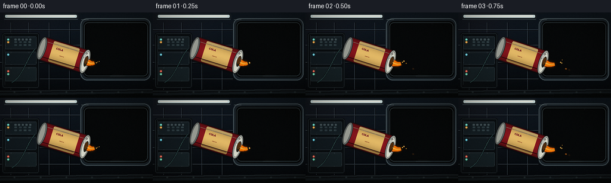
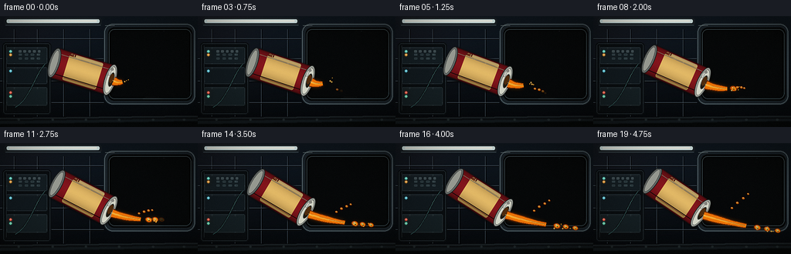
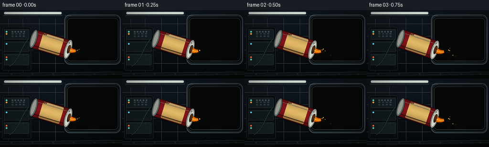
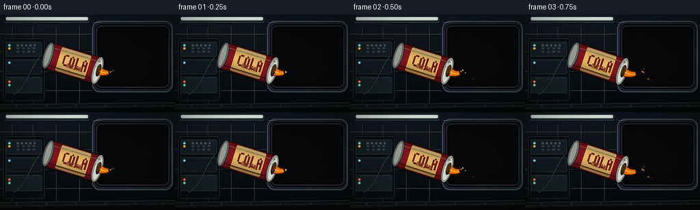

CODING AGENTS AS PIXEL WORLD MODELS
traex/DeepSeek-V4.1-Flash · phygen_005
点击播放 · 原生 RGB 像素
逐轮保存的候选
回放视频、检查图与代码变化。
每份候选均可单独播放。实际图片检查记录在下方工具轨迹中。
候选 01播放与检查图
点击播放 · 原生 RGB 像素

展开代码变化
--- 上一保存版本
+++ 本次保存版本
@@ -0,0 +1,727 @@
+"""Procedural render of soda slowly pouring out in a space station."""
+
+from __future__ import annotations
+
+import math
+import random
+from pathlib import Path
+
+import numpy as np
+from PIL import Image, ImageChops, ImageDraw, ImageFilter, ImageFont
+
+import artifact_io
+
+
+WIDTH = 256
+HEIGHT = 144
+FRAMES = 20
+FPS = 4.0
+SS = 2
+
+ROOT = Path(__file__).resolve().parent
+FONT_PATH = "/usr/share/fonts/truetype/dejavu/DejaVuSans-Bold.ttf"
+
+
+def clamp(value: float, low: float = 0.0, high: float = 1.0) -> float:
+ return max(low, min(high, value))
+
+
+def smoothstep(value: float) -> float:
+ value = clamp(value)
+ return value * value * (3.0 - 2.0 * value)
+
+
+def mix(a: float, b: float, amount: float) -> float:
+ return a + (b - a) * amount
+
+
+def sc(value: float) -> int:
+ return int(round(value * SS))
+
+
+def box(values: tuple[float, float, float, float]) -> tuple[int, int, int, int]:
+ return tuple(sc(value) for value in values)
+
+
+def line_width(value: float) -> int:
+ return max(1, int(round(value * SS)))
+
+
+def font(size: float) -> ImageFont.FreeTypeFont:
+ return ImageFont.truetype(FONT_PATH, max(5, int(round(size * SS))))
+
+
+def rgba_canvas() -> Image.Image:
+ return Image.new("RGBA", (WIDTH * SS, HEIGHT * SS), (0, 0, 0, 255))
+
+
+def rounded_mask(
+ size: tuple[int, int],
+ bounds: tuple[float, float, float, float],
+ radius: float,
+) -> Image.Image:
+ mask = Image.new("L", size, 0)
+ draw = ImageDraw.Draw(mask)
+ draw.rounded_rectangle(box(bounds), radius=sc(radius), fill=255)
+ return mask
+
+
+def add_glow(
+ canvas: Image.Image,
+ layer: Image.Image,
+ blur: float,
+ strength: float = 1.0,
+) -> Image.Image:
+ alpha = layer.getchannel("A").filter(ImageFilter.GaussianBlur(sc(blur)))
+ alpha = alpha.point(lambda value: int(value * strength))
+ glow = layer.copy()
+ glow.putalpha(alpha)
+ return Image.alpha_composite(canvas, glow)
+
+
+def make_wall() -> Image.Image:
+ width, height = WIDTH * SS, HEIGHT * SS
+ y = np.arange(height, dtype=np.float32)[:, None]
+ x = np.arange(width, dtype=np.float32)[None, :]
+ vertical = np.broadcast_to(y / (height - 1), (height, width))
+ horizontal = np.broadcast_to(x / (width - 1), (height, width))
+
+ top = np.array([13.0, 22.0, 32.0], dtype=np.float32)
+ bottom = np.array([3.0, 7.0, 12.0], dtype=np.float32)
+ array = top[None, None, :] * (1.0 - vertical[..., None])
+ array += bottom[None, None, :] * vertical[..., None]
+ wall_falloff = 1.0 - vertical
+ array[..., 0] += 6.0 * np.exp(-((horizontal - 0.14) / 0.22) ** 2) * wall_falloff
+ array[..., 1] += 3.0 * np.exp(-((horizontal - 0.18) / 0.25) ** 2) * wall_falloff
+ array[..., 2] += 4.0 * np.exp(-((horizontal - 0.22) / 0.28) ** 2) * wall_falloff
+ canvas = Image.fromarray(np.uint8(np.clip(array, 0, 255)), "RGB").convert("RGBA")
+ draw = ImageDraw.Draw(canvas, "RGBA")
+
+ # Sparse wall construction seams and inset panel bevels.
+ for px in (18.0, 48.0, 82.0, 116.0):
+ draw.line((sc(px), sc(17), sc(px), sc(130)), fill=(75, 91, 104, 32), width=line_width(0.55))
+ draw.line((sc(px + 0.8), sc(17), sc(px + 0.8), sc(130)), fill=(0, 0, 0, 55), width=line_width(0.5))
+ for py in (29.0, 55.0, 84.0, 112.0):
+ draw.line((sc(0), sc(py), sc(134), sc(py)), fill=(83, 99, 112, 26), width=line_width(0.5))
+ draw.line((sc(0), sc(py + 0.8), sc(134), sc(py + 0.8)), fill=(0, 0, 0, 60), width=line_width(0.5))
+
+ # Overhead light housing and a cool practical strip.
+ draw.rounded_rectangle(box((6, 2.5, 131, 12)), radius=sc(3), fill=(20, 28, 36, 255))
+ draw.rounded_rectangle(box((8.5, 4.2, 128.5, 8.3)), radius=sc(1.5), fill=(216, 236, 236, 220))
+ draw.rounded_rectangle(box((12, 5.0, 125, 7.0)), radius=sc(0.7), fill=(255, 255, 244, 255))
+ draw.line((sc(7), sc(11.5), sc(130), sc(11.5)), fill=(95, 119, 132, 100), width=line_width(0.7))
+
+ light_layer = Image.new("RGBA", canvas.size, (0, 0, 0, 0))
+ light_draw = ImageDraw.Draw(light_layer, "RGBA")
+ light_draw.rounded_rectangle(box((9, 4.0, 128, 9)), radius=sc(2), fill=(192, 238, 255, 90))
+ canvas = add_glow(canvas, light_layer, 4.0, 0.65)
+
+ # Small fasteners catch the overhead light.
+ for px, py in ((14, 19), (42, 19), (76, 19), (108, 19), (14, 51), (42, 51), (76, 51), (108, 51)):
+ draw.ellipse(box((px - 0.9, py - 0.9, px + 0.9, py + 0.9)), fill=(117, 137, 146, 120))
+ draw.arc(box((px - 0.8, py - 0.8, px + 0.8, py + 0.8)), 205, 330, fill=(226, 239, 238, 100), width=line_width(0.45))
+
+ return canvas
+
+
+def make_rack() -> Image.Image:
+ layer = Image.new("RGBA", (WIDTH * SS, HEIGHT * SS), (0, 0, 0, 0))
+ draw = ImageDraw.Draw(layer, "RGBA")
+
+ draw.rounded_rectangle(box((3, 34, 66, 128)), radius=sc(4), fill=(7, 12, 17, 245))
+ draw.rounded_rectangle(box((4.4, 35.5, 64.5, 126.5)), radius=sc(3.2), outline=(78, 96, 106, 145), width=line_width(0.7))
+ draw.line((sc(8), sc(38), sc(8), sc(122)), fill=(121, 142, 148, 80), width=line_width(0.6))
+
+ modules = (
+ (8.0, 40.0, 61.0, 62.0, (17, 27, 34)),
+ (8.0, 66.0, 61.0, 88.0, (14, 23, 30)),
+ (8.0, 92.0, 61.0, 116.0, (18, 29, 35)),
+ )
+ for left, top, right, bottom, color in modules:
+ draw.rounded_rectangle(box((left, top, right, bottom)), radius=sc(2.2), fill=(*color, 255))
+ draw.rounded_rectangle(box((left + 0.7, top + 0.7, right - 0.7, bottom - 0.7)), radius=sc(1.7), outline=(86, 104, 111, 105), width=line_width(0.45))
+ draw.line((sc(left + 3), sc(top + 2.2), sc(right - 3), sc(top + 2.2)), fill=(122, 144, 148, 45), width=line_width(0.45))
+
+ # Status lights and compact controls.
+ lights = (
+ (13.5, 45.5, (95, 238, 215)),
+ (13.5, 50.0, (255, 168, 55)),
+ (13.5, 71.0, (93, 218, 242)),
+ (13.5, 99.0, (255, 85, 62)),
+ (13.5, 104.0, (98, 226, 185)),
+ )
+ glow_layer = Image.new("RGBA", layer.size, (0, 0, 0, 0))
+ glow_draw = ImageDraw.Draw(glow_layer, "RGBA")
+ for px, py, color in lights:
+ draw.ellipse(box((px - 1.4, py - 1.4, px + 1.4, py + 1.4)), fill=(*color, 245))
+ draw.ellipse(box((px - 0.55, py - 0.7, px + 0.35, py - 0.05)), fill=(255, 255, 255, 190))
+ glow_draw.ellipse(box((px - 2.4, py - 2.4, px + 2.4, py + 2.4)), fill=(*color, 90))
+
+ # Rack controls.
+ for i in range(5):
+ px = 24 + i * 6.2
+ draw.rounded_rectangle(box((px, 44, px + 3.3, 47.2)), radius=sc(0.6), fill=(57, 72, 79, 255))
+ draw.line((sc(px + 0.5), sc(45.0), sc(px + 2.8), sc(45.0)), fill=(161, 180, 181, 90), width=line_width(0.35))
+ for row, py in enumerate((48.5, 53.5)):
+ for col in range(4):
+ px = 24 + col * 7.8
+ active = (row + col) % 3 == 0
+ draw.rounded_rectangle(box((px, py, px + 4.2, py + 2.4)), radius=sc(0.5), fill=(42, 58, 65, 255))
+ draw.line((sc(px + 0.7), sc(py + 1.15), sc(px + 3.5), sc(py + 1.15)), fill=(100, 121, 126, 120 if active else 45), width=line_width(0.35))
+
+ # A service cable loops across the rack.
+ cable_points = []
+ for step in range(31):
+ t = step / 30.0
+ px = mix(20, 58, t)
+ py = mix(118, 67, t) + 5.0 * math.sin(t * math.pi * 1.6)
+ cable_points.append((sc(px), sc(py)))
+ draw.line(cable_points, fill=(5, 8, 10, 230), width=line_width(2.0), joint="curve")
+ draw.line(cable_points, fill=(34, 67, 71, 255), width=line_width(1.25), joint="curve")
+ draw.line([(x, y - line_width(0.35)) for x, y in cable_points], fill=(91, 139, 139, 115), width=line_width(0.45), joint="curve")
+
+ layer = add_glow(layer, glow_layer, 3.2, 0.85)
+ return layer
+
+
+def make_window() -> tuple[Image.Image, Image.Image]:
+ """Return the window content and its foreground frame."""
+ size = (WIDTH * SS, HEIGHT * SS)
+ content = Image.new("RGBA", size, (0, 0, 0, 0))
+
+ # Deep space gradient.
+ width, height = size
+ yy, xx = np.mgrid[0:height, 0:width]
+ v = yy / max(1, height - 1)
+ space = np.zeros((height, width, 3), dtype=np.float32)
+ space[..., 0] = 1.0 + 2.0 * v
+ space[..., 1] = 5.0 + 5.0 * v
+ space[..., 2] = 11.0 + 9.0 * v
+ space = Image.fromarray(np.uint8(space), "RGB").convert("RGBA")
+ content = Image.alpha_composite(content, space)
+
+ # Stars, kept concentrated in the upper window.
+ rng = random.Random(17)
+ draw = ImageDraw.Draw(content, "RGBA")
+ star_glow = Image.new("RGBA", size, (0, 0, 0, 0))
+ glow_draw = ImageDraw.Draw(star_glow, "RGBA")
+ for _ in range(72):
+ px = rng.uniform(143, 246)
+ py = rng.uniform(18, 96)
+ radius = rng.choice((0.25, 0.3, 0.35, 0.45, 0.6, 0.8))
+ brightness = rng.randint(100, 230)
+ tint = rng.choice(((210, 230, 245), (255, 225, 190), (190, 218, 255)))
+ draw.ellipse(box((px - radius, py - radius, px + radius, py + radius)), fill=(*tint, brightness))
+ if radius >= 0.55:
+ glow_draw.ellipse(box((px - radius * 3, py - radius * 3, px + radius * 3, py + radius * 3)), fill=(*tint, 65))
+ content = Image.alpha_composite(content, star_glow.filter(ImageFilter.GaussianBlur(sc(1.0))))
+
+ # The Earth limb gives the scene an unmistakable orbital setting.
+ earth = Image.new("RGBA", size, (0, 0, 0, 0))
+ earth_draw = ImageDraw.Draw(earth, "RGBA")
+ ecx, ecy, er = 224.0, 170.0, 74.0
+ earth_draw.ellipse(box((ecx - er, ecy - er, ecx + er, ecy + er)), fill=(17, 72, 101, 255))
+ for i in range(7):
+ y0 = 100 + i * 8
+ earth_draw.ellipse(box((153 + i * 2, y0, 290 - i * 3, y0 + 22)), fill=(22 + i * 2, 82 + i * 2, 105 + i, 90))
+ # Land shapes.
+ earth_draw.polygon(
+ [(166, 105), (177, 99), (189, 101), (194, 108), (185, 114), (172, 112)],
+ fill=(55, 92, 73, 180),
+ )
+ earth_draw.polygon(
+ [(215, 105), (230, 98), (248, 101), (252, 109), (239, 117), (222, 116)],
+ fill=(73, 101, 74, 160),
+ )
+ earth_draw.polygon(
+ [(194, 121), (207, 113), (221, 117), (217, 127), (203, 131)],
+ fill=(88, 107, 73, 150),
+ )
+ # Soft cloud bands.
+ cloud = Image.new("RGBA", size, (0, 0, 0, 0))
+ cloud_draw = ImageDraw.Draw(cloud, "RGBA")
+ for i in range(5):
+ cy = 100 + i * 7.2
+ cx = 179 + i * 8.5
+ cloud_draw.ellipse(box((cx - 22, cy - 2.2, cx + 24, cy + 3.1)), fill=(218, 239, 241, 60))
+ cloud_draw.ellipse(box((cx - 8, cy - 3.2, cx + 18, cy + 1.8)), fill=(244, 248, 241, 72))
+ cloud = cloud.filter(ImageFilter.GaussianBlur(sc(1.05)))
+ earth = Image.alpha_composite(earth, cloud)
+
+ earth_mask = Image.new("L", size, 0)
+ mask_draw = ImageDraw.Draw(earth_mask)
+ mask_draw.ellipse(box((ecx - er, ecy - er, ecx + er, ecy + er)), fill=255)
+ earth.putalpha(ImageChops.multiply(earth.getchannel("A"), earth_mask))
+ content = Image.alpha_composite(content, earth)
+
+ # Cyan atmosphere, brightest along the upper limb.
+ atmosphere = Image.new("RGBA", size, (0, 0, 0, 0))
+ atmo_draw = ImageDraw.Draw(atmosphere, "RGBA")
+ atmo_draw.arc(box((ecx - er - 1.1, ecy - er - 1.1, ecx + er + 1.1, ecy + er + 1.1)), 170, 355, fill=(89, 206, 235, 175), width=line_width(1.1))
+ atmo_draw.arc(box((ecx - er + 0.3, ecy - er + 0.3, ecx + er - 0.3, ecy + er - 0.3)), 188, 344, fill=(209, 246, 248, 90), width=line_width(0.55))
+ content = add_glow(content, atmosphere, 4.2, 0.8)
+
+ # Faint glass reflections and a vertical structural mullion.
+ glass = Image.new("RGBA", size, (0, 0, 0, 0))
+ glass_draw = ImageDraw.Draw(glass, "RGBA")
+ glass_draw.polygon([(149, 105), (185, 18), (197, 18), (161, 105)], fill=(157, 217, 230, 13))
+ glass_draw.polygon([(205, 105), (233, 18), (238, 18), (211, 105)], fill=(157, 217, 230, 9))
+ glass_draw.line((sc(205), sc(18), sc(205), sc(106)), fill=(161, 187, 193, 80), width=line_width(1.4))
+ glass_draw.line((sc(206.2), sc(18), sc(206.2), sc(106)), fill=(4, 9, 13, 150), width=line_width(0.8))
+ content = Image.alpha_composite(content, glass)
+
+ inner_mask = rounded_mask(size, (141, 17, 247, 107), 7.0)
+ content.putalpha(ImageChops.multiply(content.getchannel("A"), inner_mask))
+
+ frame = Image.new("RGBA", size, (0, 0, 0, 0))
+ frame_draw = ImageDraw.Draw(frame, "RGBA")
+ frame_draw.rounded_rectangle(box((134, 9, 253, 115)), radius=sc(12), fill=(22, 31, 39, 255))
+ frame_draw.rounded_rectangle(box((135.2, 10.2, 251.8, 113.8)), radius=sc(11), outline=(102, 121, 129, 190), width=line_width(0.8))
+ frame_draw.rounded_rectangle(box((139.5, 14.5, 249, 109.5)), radius=sc(8), fill=(4, 7, 10, 255))
+ frame_draw.rounded_rectangle(box((141, 17, 247, 107)), radius=sc(7), outline=(116, 142, 151, 175), width=line_width(0.7))
+ frame_draw.rounded_rectangle(box((143, 19, 245, 105)), radius=sc(6), outline=(0, 0, 0, 200), width=line_width(0.6))
+ frame_draw.line((sc(136), sc(12), sc(148), sc(12)), fill=(203, 221, 220, 135), width=line_width(0.55))
+ return content, frame
+
+
+def render_can(theta_deg: float, center: tuple[float, float]) -> tuple[Image.Image, tuple[float, float]]:
+ """Render a shaded can locally, rotate it, and return its opening point."""
+ local_scale = 4
+ cw, ch = 104.0, 76.0
+ size = (int(cw * local_scale), int(ch * local_scale))
+ layer = Image.new("RGBA", size, (0, 0, 0, 0))
+
+ body_mask_small = Image.new("L", size, 0)
+ body_mask_draw = ImageDraw.Draw(body_mask_small)
+ body_mask_draw.rounded_rectangle(
+ (int(9 * local_scale), int(18 * local_scale), int(87 * local_scale), int(58 * local_scale)),
+ radius=int(5 * local_scale),
+ fill=255,
+ )
+
+ body = Image.new("RGBA", size, (0, 0, 0, 0))
+ body_draw = ImageDraw.Draw(body, "RGBA")
+ body_draw.rounded_rectangle(
+ (int(9 * local_scale), int(18 * local_scale), int(87 * local_scale), int(58 * local_scale)),
+ radius=int(5 * local_scale),
+ fill=(129, 20, 30, 255),
+ )
+
+ # Gold label panel, inset so the red metal remains visible at both ends.
+ label_mask = Image.new("L", size, 0)
+ label_draw = ImageDraw.Draw(label_mask)
+ label_draw.rounded_rectangle(
+ (int(27 * local_scale), int(20 * local_scale), int(72 * local_scale), int(56 * local_scale)),
+ radius=int(2.2 * local_scale),
+ fill=255,
+ )
+ label = Image.new("RGBA", size, (0, 0, 0, 0))
+ label_draw = ImageDraw.Draw(label, "RGBA")
+ label_draw.rectangle(
+ (int(27 * local_scale), int(20 * local_scale), int(72 * local_scale), int(56 * local_scale)),
+ fill=(221, 178, 98, 255),
+ )
+ label_draw.rectangle(
+ (int(27 * local_scale), int(20 * local_scale), int(72 * local_scale), int(23.0 * local_scale)),
+ fill=(244, 209, 137, 255),
+ )
+ label_draw.line(
+ (int(28 * local_scale), int(53.0 * local_scale), int(71 * local_scale), int(53.0 * local_scale)),
+ fill=(133, 79, 43, 180),
+ width=int(0.8 * local_scale),
+ )
+ label_draw.text(
+ (int(34 * local_scale), int(29.0 * local_scale)),
+ "COLA",
+ font=font(8.2),
+ fill=(102, 25, 26, 255),
+ stroke_width=max(1, int(0.25 * local_scale)),
+ stroke_fill=(255, 226, 163, 70),
+ )
+ label_draw.text(
+ (int(42.5 * local_scale), int(40.5 * local_scale)),
+ "ORBITAL",
+ font=font(3.5),
+ fill=(123, 50, 31, 220),
+ )
+ label.putalpha(ImageChops.multiply(label.getchannel("A"), label_mask))
+ body = Image.alpha_composite(body, label)
+
+ # Cylindrical shading along the can's vertical cross-section.
+ arr = np.asarray(body).astype(np.float32)
+ yy = np.arange(size[1], dtype=np.float32)[:, None]
+ center_y = 38.0 * local_scale
+ normalized = np.clip((yy - center_y) / (20.0 * local_scale), -1.0, 1.0)
+ shade = 0.38 + 0.62 * np.sqrt(np.maximum(0.0, 1.0 - normalized * normalized))
+ # A stronger key from the upper left.
+ shade *= 0.91 + 0.09 * np.clip(1.0 - normalized, 0.0, 1.0)
+ arr[..., :3] *= shade[:, :, None]
+ body = Image.fromarray(np.uint8(np.clip(arr, 0, 255)), "RGBA")
+ body.putalpha(body_mask_small)
+ layer = Image.alpha_composite(layer, body)
+ draw = ImageDraw.Draw(layer, "RGBA")
+
+ # Bright side highlights and dark contour.
+ draw.line(
+ (int(13 * local_scale), int(25 * local_scale), int(84 * local_scale), int(25 * local_scale)),
+ fill=(255, 223, 185, 115),
+ width=int(0.9 * local_scale),
+ )
+ draw.line(
+ (int(13 * local_scale), int(51.5 * local_scale), int(83 * local_scale), int(51.5 * local_scale)),
+ fill=(45, 8, 14, 145),
+ width=int(1.2 * local_scale),
+ )
+ draw.rounded_rectangle(
+ (int(9 * local_scale), int(18 * local_scale), int(87 * local_scale), int(58 * local_scale)),
+ radius=int(5 * local_scale),
+ outline=(43, 12, 17, 210),
+ width=int(1.0 * local_scale),
+ )
+
+ # Aluminum end caps and the open drinking face.
+ draw.ellipse(
+ (int(4 * local_scale), int(18 * local_scale), int(18 * local_scale), int(58 * local_scale)),
+ fill=(99, 105, 105, 255),
+ outline=(31, 35, 36, 255),
+ width=int(1.1 * local_scale),
+ )
+ draw.ellipse(
+ (int(6.3 * local_scale), int(21 * local_scale), int(15.3 * local_scale), int(55 * local_scale)),
+ fill=(147, 151, 145, 255),
+ outline=(72, 76, 76, 180),
+ width=int(0.6 * local_scale),
+ )
+ draw.ellipse(
+ (int(79 * local_scale), int(17 * local_scale), int(94 * local_scale), int(59 * local_scale)),
+ fill=(154, 159, 154, 255),
+ outline=(38, 42, 43, 255),
+ width=int(1.2 * local_scale),
+ )
+ draw.ellipse(
+ (int(81.5 * local_scale), int(20 * local_scale), int(92 * local_scale), int(56 * local_scale)),
+ fill=(207, 210, 198, 255),
+ outline=(91, 96, 95, 190),
+ width=int(0.65 * local_scale),
+ )
+ draw.ellipse(
+ (int(84.5 * local_scale), int(27.5 * local_scale), int(91.5 * local_scale), int(47.0 * local_scale)),
+ fill=(25, 23, 18, 255),
+ outline=(109, 114, 111, 255),
+ width=int(0.8 * local_scale),
+ )
+ draw.ellipse(
+ (int(85.2 * local_scale), int(29.5 * local_scale), int(90.7 * local_scale), int(42.0 * local_scale)),
+ fill=(74, 41, 15, 255),
+ )
+ # Pull tab.
+ draw.rounded_rectangle(
+ (int(82.2 * local_scale), int(25.0 * local_scale), int(84.8 * local_scale), int(33.2 * local_scale)),
+ radius=int(1.0 * local_scale),
+ fill=(190, 195, 188, 255),
+ outline=(78, 83, 82, 180),
+ width=int(0.45 * local_scale),
+ )
+ draw.arc(
+ (int(81 * local_scale), int(20.5 * local_scale), int(92 * local_scale), int(55 * local_scale)),
+ 205,
+ 322,
+ fill=(249, 250, 239, 140),
+ width=int(0.6 * local_scale),
+ )
+
+ # A few reflections on the cap and label.
+ draw.ellipse(
+ (int(83.2 * local_scale), int(22 * local_scale), int(87.2 * local_scale), int(26 * local_scale)),
+ fill=(255, 255, 244, 130),
+ )
+ draw.line(
+ (int(33 * local_scale), int(24.2 * local_scale), int(68 * local_scale), int(24.2 * local_scale)),
+ fill=(255, 245, 205, 125),
+ width=int(0.55 * local_scale),
+ )
+
+ local = layer.resize((int(cw * SS), int(ch * SS)), Image.Resampling.LANCZOS)
+ local = local.rotate(-theta_deg, resample=Image.Resampling.BICUBIC, expand=False)
+ canvas = Image.new("RGBA", (WIDTH * SS, HEIGHT * SS), (0, 0, 0, 0))
+ paste_x = sc(center[0]) - local.width // 2
+ paste_y = sc(center[1]) - local.height // 2
+
+ # A dark rim of ambient occlusion helps separate the can from the window.
+ silhouette = local.getchannel("A").filter(ImageFilter.GaussianBlur(sc(1.3)))
+ shadow = Image.new("RGBA", local.size, (0, 0, 0, 0))
+ shadow.putalpha(silhouette.point(lambda value: int(value * 0.60)))
+ canvas.alpha_composite(shadow, (paste_x + sc(1.1), paste_y + sc(1.2)))
+ canvas.alpha_composite(local, (paste_x, paste_y))
+
+ theta = math.radians(theta_deg)
+ opening = (
+ center[0] + 39.0 * math.cos(theta),
+ center[1] + 39.0 * math.sin(theta),
+ )
+ return canvas, opening
+
+
+def flow_point(opening: tuple[float, float], length: float, s: float, phase: float) -> tuple[float, float]:
+ angle = math.radians(18.0 + 1.2 * math.sin(phase * 0.8))
+ x = opening[0] + length * s * math.cos(angle)
+ y = opening[1] + length * s * math.sin(angle) - 10.0 * s * s
+ y += 1.15 * math.sin(2.2 * s + phase)
+ return x, y
+
+
+def make_drop(radius_x: float, radius_y: float, angle: float, alpha: int) -> Image.Image:
+ local_scale = 4
+ canvas_size = (int((radius_x * 2.0 + 10.0) * local_scale), int((radius_y * 2.0 + 10.0) * local_scale))
+ drop = Image.new("RGBA", canvas_size, (0, 0, 0, 0))
+ draw = ImageDraw.Draw(drop, "RGBA")
+ cx, cy = canvas_size[0] / 2.0, canvas_size[1] / 2.0
+
+ def ellipse(rx: float, ry: float, fill: tuple[int, int, int, int]) -> None:
+ draw.ellipse(
+ (cx - rx * local_scale, cy - ry * local_scale, cx + rx * local_scale, cy + ry * local_scale),
+ fill=fill,
+ )
+
+ ellipse(radius_x, radius_y, (92, 31, 2, 245))
+ ellipse(radius_x * 0.86, radius_y * 0.84, (198, 77, 4, 255))
+ ellipse(radius_x * 0.66, radius_y * 0.63, (244, 133, 15, 255))
+ ellipse(radius_x * 0.42, radius_y * 0.37, (255, 191, 44, 210))
+ ellipse(radius_x * 0.18, radius_y * 0.13, (255, 239, 151, 220))
+ # Specular and a tiny internal bubble make the amber read as liquid.
+ draw.ellipse(
+ (
+ cx - radius_x * 0.48 * local_scale,
+ cy - radius_y * 0.51 * local_scale,
+ cx - radius_x * 0.05 * local_scale,
+ cy - radius_y * 0.20 * local_scale,
+ ),
+ fill=(255, 248, 207, 185),
+ )
+ draw.ellipse(
+ (
+ cx + radius_x * 0.06 * local_scale,
+ cy + radius_y * 0.12 * local_scale,
+ cx + radius_x * 0.34 * local_scale,
+ cy + radius_y * 0.41 * local_scale,
+ ),
+ fill=(117, 43, 2, 100),
+ )
+ drop = drop.resize(
+ (max(3, int(round(drop.width / local_scale * SS))), max(3, int(round(drop.height / local_scale * SS)))),
+ Image.Resampling.LANCZOS,
+ )
+ drop = drop.rotate(-angle, resample=Image.Resampling.BICUBIC, expand=True)
+ drop.putalpha(drop.getchannel("A").point(lambda value: int(value * alpha / 255)))
+ return drop
+
+
+def draw_fluid(
+ opening: tuple[float, float],
+ length: float,
+ phase: float,
+ frame_index: int,
+) -> tuple[Image.Image, Image.Image]:
+ size = (WIDTH * SS, HEIGHT * SS)
+ fluid = Image.new("RGBA", size, (0, 0, 0, 0))
+ draw = ImageDraw.Draw(fluid, "RGBA")
+
+ # The coherent part of the stream stretches before surface tension pinches it off.
+ breakup = 0.62
+ samples = 58
+ centerline = []
+ for i in range(samples + 1):
+ s = breakup * i / samples
+ centerline.append(flow_point(opening, length, s, phase))
+
+ left_edge = []
+ right_edge = []
+ for i, point in enumerate(centerline):
+ s = breakup * i / samples
+ if i == 0:
+ tangent = (centerline[1][0] - point[0], centerline[1][1] - point[1])
+ elif i == samples:
+ tangent = (point[0] - centerline[i - 1][0], point[1] - centerline[i - 1][1])
+ else:
+ tangent = (centerline[i + 1][0] - centerline[i - 1][0], centerline[i + 1][1] - centerline[i - 1][1])
+ tangent_length = max(0.001, math.hypot(*tangent))
+ nx, ny = -tangent[1] / tangent_length, tangent[0] / tangent_length
+ width = mix(5.9, 2.9, s / breakup)
+ width *= 1.0 + 0.055 * math.sin(14.0 * s + phase * 1.7)
+ left_edge.append((point[0] + nx * width, point[1] + ny * width))
+ right_edge.append((point[0] - nx * width, point[1] - ny * width))
+
+ ribbon = [(sc(x), sc(y)) for x, y in left_edge + list(reversed(right_edge))]
+ draw.polygon(ribbon, fill=(91, 28, 1, 248))
+
+ inner_left = []
+ inner_right = []
+ for i, point in enumerate(centerline):
+ s = breakup * i / samples
+ if i == 0:
+ tangent = (centerline[1][0] - point[0], centerline[1][1] - point[1])
+ elif i == samples:
+ tangent = (point[0] - centerline[i - 1][0], point[1] - centerline[i - 1][1])
+ else:
+ tangent = (centerline[i + 1][0] - centerline[i - 1][0], centerline[i + 1][1] - centerline[i - 1][1])
+ tangent_length = max(0.001, math.hypot(*tangent))
+ nx, ny = -tangent[1] / tangent_length, tangent[0] / tangent_length
+ width = mix(4.65, 2.1, s / breakup)
+ width *= 1.0 + 0.055 * math.sin(14.0 * s + phase * 1.7)
+ inner_left.append((point[0] + nx * width, point[1] + ny * width))
+ inner_right.append((point[0] - nx * width, point[1] - ny * width))
+ inner_ribbon = [(sc(x), sc(y)) for x, y in inner_left + list(reversed(inner_right))]
+ draw.polygon(inner_ribbon, fill=(226, 105, 8, 255))
+
+ # Amber core and a broken-up specular line.
+ for i in range(0, samples, 2):
+ p = centerline[i]
+ q = centerline[min(samples, i + 2)]
+ s = breakup * i / samples
+ radius = mix(1.35, 0.45, s / breakup)
+ draw.line((sc(p[0]), sc(p[1]), sc(q[0]), sc(q[1])), fill=(250, 156, 29, 255), width=line_width(radius * 2.0))
+ for i in range(0, samples - 3, 3):
+ p = centerline[i]
+ q = centerline[min(samples, i + 3)]
+ s = breakup * i / samples
+ offset = mix(1.15, 0.5, s / breakup)
+ highlight_alpha = int(mix(190, 95, s / breakup))
+ draw.line(
+ (sc(p[0] - offset), sc(p[1] - offset * 0.7), sc(q[0] - offset), sc(q[1] - offset * 0.7)),
+ fill=(255, 231, 155, highlight_alpha),
+ width=line_width(0.55),
+ )
+
+ # Growing beads at the breakup point.
+ bead_specs = ((0.79, 4.7, 3.5), (0.94, 4.2, 3.1), (1.09, 3.8, 2.8))
+ for index, (s, rx, ry) in enumerate(bead_specs):
+ threshold = 38.0 + index * 11.0
+ alpha = int(255 * smoothstep((length - threshold) / 10.0))
+ if alpha <= 3:
+ continue
+ px, py = flow_point(opening, length, s, phase)
+ px += 0.8 * math.sin(phase + index * 1.4)
+ py += 0.5 * math.cos(phase * 0.9 + index)
+ drop = make_drop(rx, ry, 17.0 + 1.5 * math.sin(phase + index), alpha)
+ fluid.alpha_composite(drop, (sc(px) - drop.width // 2, sc(py) - drop.height // 2))
+
+ # Small satellite droplets peel away into the surrounding volume.
+ satellites = (
+ (0.24, 0.9, -5.0, 1.7),
+ (0.42, 1.8, -9.0, 2.0),
+ (0.58, 3.1, -13.0, 1.8),
+ (0.71, 4.6, -17.0, 1.45),
+ )
+ for index, (birth, vx, vy, radius) in enumerate(satellites):
+ if phase < birth:
+ continue
+ age = phase - birth
+ px = opening[0] + 27.0 + 29.0 * birth + vx * age
+ py = opening[1] + 9.0 + 8.0 * birth + vy * age - 1.0 * age * age
+ fade = clamp(age / 0.35)
+ drop = make_drop(radius, radius * 0.78, 17.0 + index * 4.0, int(225 * fade))
+ fluid.alpha_composite(drop, (sc(px) - drop.width // 2, sc(py) - drop.height // 2))
+
+ # A few tiny sparkling beads close to the stream tip.
+ rng = random.Random(100 + frame_index)
+ for _ in range(3 + frame_index // 5):
+ s = rng.uniform(0.75, 1.04)
+ px, py = flow_point(opening, length, s, phase)
+ px += rng.uniform(-4.0, 5.0)
+ py += rng.uniform(-4.0, 3.0)
+ radius = rng.uniform(0.45, 0.95)
+ draw.ellipse(
+ box((px - radius, py - radius, px + radius, py + radius)),
+ fill=(255, 180, 60, rng.randint(150, 235)),
+ )
+ if radius > 0.7:
+ draw.ellipse(
+ box((px - radius * 0.55, py - radius * 0.55, px - radius * 0.05, py - radius * 0.05)),
+ fill=(255, 245, 200, 160),
+ )
+
+ glow = fluid.filter(ImageFilter.GaussianBlur(sc(3.6)))
+ glow.putalpha(glow.getchannel("A").point(lambda value: int(value * 0.48)))
+ return glow, fluid
+
+
+def make_foreground() -> Image.Image:
+ layer = Image.new("RGBA", (WIDTH * SS, HEIGHT * SS), (0, 0, 0, 0))
+ draw = ImageDraw.Draw(layer, "RGBA")
+
+ # A shallow, defocused console lip grounds the floating scene without a floor.
+ draw.rectangle((0, sc(132), WIDTH * SS, HEIGHT * SS), fill=(3, 7, 10, 255))
+ draw.polygon(
+ [(0, sc(132)), (WIDTH * SS, sc(129)), (WIDTH * SS, sc(136)), (0, sc(140))],
+ fill=(17, 25, 31, 255),
+ )
+ draw.line((0, sc(132.2), WIDTH * SS, sc(129.2)), fill=(94, 112, 119, 125), width=line_width(0.8))
+ draw.line((0, sc(135.2), WIDTH * SS, sc(132.2)), fill=(2, 4, 6, 220), width=line_width(1.3))
+ for px in (24, 68, 111, 154, 198, 238):
+ draw.ellipse(box((px - 0.8, 133.3, px + 0.8, 134.9)), fill=(90, 109, 113, 65))
+ return layer.filter(ImageFilter.GaussianBlur(sc(0.55)))
+
+
+def postprocess(image: Image.Image, frame_index: int) -> Image.Image:
+ image = image.convert("RGB")
+
+ # Restrained bloom around the brightest practicals and fluid highlights.
+ array = np.asarray(image).astype(np.float32)
+ luminance = array.max(axis=2)
+ mask = np.clip((luminance - 178.0) / 77.0, 0.0, 1.0)
+ bright = Image.fromarray(np.uint8(array * mask[..., None]), "RGB").filter(ImageFilter.GaussianBlur(sc(2.3)))
+ image = Image.blend(image, ImageChops.screen(image, bright), 0.22)
+
+ arr = np.asarray(image).astype(np.float32)
+ yy, xx = np.mgrid[0 : HEIGHT * SS, 0 : WIDTH * SS]
+ nx = (xx - (WIDTH * SS - 1) / 2.0) / (WIDTH * SS / 2.0)
+ ny = (yy - (HEIGHT * SS - 1) / 2.0) / (HEIGHT * SS / 2.0)
+ vignette = np.clip(1.08 - 0.28 * (nx * nx * 0.75 + ny * ny), 0.68, 1.0)
+ arr *= vignette[..., None]
+
+ # Slight warm/cool grade and deterministic fine grain.
+ arr[..., 0] += 2.3
+ arr[..., 1] += 1.0
+ arr[..., 2] -= 1.4
+ rng = np.random.default_rng(900 + frame_index)
+ grain = rng.normal(0.0, 1.15, (HEIGHT * SS, WIDTH * SS, 1)).astype(np.float32)
+ arr += grain
+ image = Image.fromarray(np.uint8(np.clip(arr, 0, 255)), "RGB")
+ image = image.resize((WIDTH, HEIGHT), Image.Resampling.LANCZOS)
+ image = image.filter(ImageFilter.UnsharpMask(radius=0.55, percent=55, threshold=2))
+ return image
+
+
+def render_frame(frame_index: int) -> Image.Image:
+ t = frame_index / (FRAMES - 1)
+ eased = smoothstep(t)
+
+ canvas = make_wall()
+ canvas = Image.alpha_composite(canvas, make_rack())
+
+ window_content, window_frame = make_window()
+ canvas = Image.alpha_composite(canvas, window_content)
+ canvas = Image.alpha_composite(canvas, window_frame)
+
+ theta = 17.0 + 17.0 * eased + 0.35 * math.sin(t * math.tau)
+ can_center = (109.5 + 1.1 * eased, 72.5 - 1.0 * eased + 0.35 * math.sin(t * math.tau + 0.3))
+ can, opening = render_can(theta, can_center)
+
+ length = 19.0 + 73.0 * eased + 1.1 * math.sin(t * math.tau * 1.2)
+ phase = 2.9 * t
+ glow, fluid = draw_fluid(opening, length, phase, frame_index)
+
+ canvas = Image.alpha_composite(canvas, glow)
+ canvas = Image.alpha_composite(canvas, can)
+ canvas = Image.alpha_composite(canvas, fluid)
+ canvas = Image.alpha_composite(canvas, make_foreground())
+ return postprocess(canvas, frame_index)
+
+
+def main() -> None:
+ frames = np.stack([np.asarray(render_frame(index), dtype=np.uint8) for index in range(FRAMES)])
+ artifact_io.save(frames, ROOT)
+
+
+if __name__ == "__main__":
+ main()
候选 02播放与检查图
点击播放 · 原生 RGB 像素


展开代码变化
--- 上一保存版本
+++ 本次保存版本
@@ -7,7 +7,7 @@
from pathlib import Path
import numpy as np
-from PIL import Image, ImageChops, ImageDraw, ImageFilter, ImageFont
+from PIL import Image, ImageChops, ImageDraw, ImageFilter
import artifact_io
@@ -19,7 +19,17 @@
SS = 2
ROOT = Path(__file__).resolve().parent
-FONT_PATH = "/usr/share/fonts/truetype/dejavu/DejaVuSans-Bold.ttf"
+
+GLYPHS = {
+ "A": ("010", "101", "101", "111", "101", "101", "101"),
+ "C": ("011", "100", "100", "100", "100", "100", "011"),
+ "I": ("111", "010", "010", "010", "010", "010", "111"),
+ "L": ("100", "100", "100", "100", "100", "100", "111"),
+ "O": ("010", "101", "101", "101", "101", "101", "010"),
+ "R": ("110", "101", "101", "110", "101", "101", "101"),
+ "T": ("111", "010", "010", "010", "010", "010", "010"),
+ "B": ("110", "101", "101", "110", "101", "101", "110"),
+}
def clamp(value: float, low: float = 0.0, high: float = 1.0) -> float:
@@ -47,8 +57,29 @@
return max(1, int(round(value * SS)))
-def font(size: float) -> ImageFont.FreeTypeFont:
- return ImageFont.truetype(FONT_PATH, max(5, int(round(size * SS))))
+def draw_bitmap_text(
+ draw: ImageDraw.ImageDraw,
+ position: tuple[float, float],
+ text: str,
+ pixel: float,
+ color: tuple[int, int, int, int],
+ spacing: float = 1.0,
+) -> None:
+ """Draw a compact seven-row label without loading an external font."""
+ x0, y0 = position
+ cursor = x0
+ for char in text:
+ glyph = GLYPHS[char]
+ for row, bits in enumerate(glyph):
+ for column, bit in enumerate(bits):
+ if bit == "1":
+ left = cursor + column * pixel
+ top = y0 + row * pixel
+ draw.rectangle(
+ box((left, top, left + pixel, top + pixel)),
+ fill=color,
+ )
+ cursor += (len(glyph[0]) + spacing) * pixel
def rgba_canvas() -> Image.Image:
@@ -330,19 +361,21 @@
fill=(133, 79, 43, 180),
width=int(0.8 * local_scale),
)
- label_draw.text(
- (int(34 * local_scale), int(29.0 * local_scale)),
+ draw_bitmap_text(
+ label_draw,
+ (34.0, 29.0),
"COLA",
- font=font(8.2),
- fill=(102, 25, 26, 255),
- stroke_width=max(1, int(0.25 * local_scale)),
- stroke_fill=(255, 226, 163, 70),
- )
- label_draw.text(
- (int(42.5 * local_scale), int(40.5 * local_scale)),
+ pixel=2.4,
+ color=(102, 25, 26, 255),
+ spacing=1.0,
+ )
+ draw_bitmap_text(
+ label_draw,
+ (41.5, 40.5),
"ORBITAL",
- font=font(3.5),
- fill=(123, 50, 31, 220),
+ pixel=0.95,
+ color=(123, 50, 31, 220),
+ spacing=0.75,
)
label.putalpha(ImageChops.multiply(label.getchannel("A"), label_mask))
body = Image.alpha_composite(body, label)
候选 03播放与检查图
点击播放 · 原生 RGB 像素

展开代码变化
--- 上一保存版本
+++ 本次保存版本
@@ -76,7 +76,7 @@
left = cursor + column * pixel
top = y0 + row * pixel
draw.rectangle(
- box((left, top, left + pixel, top + pixel)),
+ (left, top, left + pixel, top + pixel),
fill=color,
)
cursor += (len(glyph[0]) + spacing) * pixel
@@ -363,17 +363,17 @@
)
draw_bitmap_text(
label_draw,
- (34.0, 29.0),
+ (34.0 * local_scale, 29.0 * local_scale),
"COLA",
- pixel=2.4,
+ pixel=2.4 * local_scale,
color=(102, 25, 26, 255),
spacing=1.0,
)
draw_bitmap_text(
label_draw,
- (41.5, 40.5),
+ (41.5 * local_scale, 40.5 * local_scale),
"ORBITAL",
- pixel=0.95,
+ pixel=0.95 * local_scale,
color=(123, 50, 31, 220),
spacing=0.75,
)
可观测工具轨迹
实际执行的命令与返回图片。
命令 1exit 0
/bin/bash -lc "pwd && rg --files -g 'prompt.txt' -g 'GENERATION_RULES.md' -g 'task_spec.json' -g '"'!node_modules'"' -g '"'!*.mp4'"' -g '"'!*.mov'"'"
命令 2exit 0
/bin/bash -lc 'ls -la'
命令 3exit 0
/bin/bash -lc 'cat prompt.txt'
命令 4exit 0
/bin/bash -lc 'cat GENERATION_RULES.md'
命令 5exit 0
/bin/bash -lc 'cat task_spec.json'
命令 6exit 0
/bin/bash -lc "sed -n '1,240p' artifact_io.py"
命令 7exit 0
/bin/bash -lc "python - <<'PY'
import importlib.util
for name in ['numpy','PIL','scipy','cv2','imageio']:
print(name, bool(importlib.util.find_spec(name)))
PY"命令 8exit 0
/bin/bash -lc "fc-match 'DejaVu Sans:style=Bold' | head -1"
命令 9exit 0
/bin/bash -lc 'command -v chafa || command -v viu || command -v jp2 || true'
命令 10exit 0
/bin/bash -lc "sed -n '1,260p' player_template.html"
命令 11exit 0
/bin/bash -lc 'command -v img2txt || command -v viu || command -v jp2 || command -v kitty || command -v timg || command -v wezterm || true'
命令 12exit 0
/bin/bash -lc 'command -v ffmpeg || true'
命令 13exit 1
/bin/bash -lc 'python generate.py'
命令 14exit 1
/bin/bash -lc 'python generate.py'
命令 15exit 1
/bin/bash -lc 'python generate.py'
命令 16exit 0
/bin/bash -lc 'python generate.py'
命令 17exit 0
/bin/bash -lc 'ls -lh task_spec.json prompt.txt generate.py pixels.npz inspection.png transition_check.png index.html frames/*.png'
命令 18exit 0
/bin/bash -lc "python - <<'PY'
from PIL import Image
import numpy as np
chars=' .,:;irsXA253hMHGS#9B&@'
for f in [0,5,10,15,19]:
a=np.asarray(Image.open(f'frames/{f:02d}.png').convert('L'),dtype=float)
# perceptual ascii downsample using area averaging
im=Image.fromarray(np.uint8(a)).resize((80,36),Image.Resampling.BOX)
b=np.asarray(im,dtype=float)
b=(b-b.min())/(b.max()-b.min()+1e-6)
print(f'--- FRAME {f:02d} luminance {a.mean():.1f} ---')
for row in b:
print(''.join(chars[min(len(chars)-1,int(v*(len(chars)-1)))] for v in row))
PY"命令 19exit 0
/bin/bash -lc "python - <<'PY'
from PIL import Image
import numpy as np
frames=np.stack([np.asarray(Image.open(f'frames/{i:02d}.png')) for i in range(20)])
print('shape/dtype/range:', frames.shape, frames.dtype, int(frames.min()), int(frames.max()))
diffs=[]
for i in range(1,len(frames)):
d=np.abs(frames[i].astype(np.int16)-frames[i-1].astype(np.int16))
diffs.append((i, float(d.mean()), int((d.max(2)>8).sum())))
print('consecutive diffs (frame, mean abs, pixels>8):')
print(diffs)
for i in [0,4,9,14,19]:
f=frames[i]
print(i, 'mean rgb', f.mean((0,1)).round(1), 'nonblack%', round(100*(f.max(2)>10).mean(),1), 'unique', len(np.unique(f.reshape(-1,3),axis=0)))
PY"命令 20exit 0
/bin/bash -lc "python - <<'PY'
from PIL import Image
import numpy as np
for i in range(20):
a=np.asarray(Image.open(f'frames/{i:02d}.png')).astype(int)
r,g,b=a[...,0],a[...,1],a[...,2]
orange=(r>110)&(r>g*1.45)&(g>b*1.5)&(b<95)
red=(r>60)&(r>g*1.8)&(r>b*1.6)
bright=(r>185)&(g>185)&(b>160)
ys,xs=np.where(orange)
box=(xs.min(),ys.min(),xs.max(),ys.max()) if len(xs) else None
print(f'{i:02d} orange={orange.sum():4d} bbox={box} red={red.sum():4d} bright={bright.sum():4d}')
PY"命令 21exit 0
/bin/bash -lc "python - <<'PY'
from PIL import Image, ImageDraw
frames=[Image.open(f'frames/{i:02d}.png') for i in (0,5,10,15,19)]
out=Image.new('RGB',(256*3, (144+16)*2),(20,20,20))
d=ImageDraw.Draw(out)
for j,(i,im) in enumerate(zip((0,5,10,15,19),frames)):
x=(j%3)*256;y=(j//3)*160
d.text((x+5,y+2),f'FRAME {i:02d}',fill='white')
out.paste(im,(x,y+16))
out.resize((768*2,320*2),Image.Resampling.NEAREST).save('.tmp/qa_grid.png')
PY"命令 22exit 0
/bin/bash -lc "python - <<'PY'
from PIL import Image
im=Image.open('frames/19.png')
print(im.getpixel((158,74)), im.getpixel((161,79)), im.getpixel((170,85)), im.getpixel((180,90)))
PY"命令 23exit 0
/bin/bash -lc "python - <<'PY' import generate, math for i in (0,10,19): t=i/19;e=generate.smoothstep(t);theta=17+17*e;c=(109.5+1.1*e,72.5-1*e+0.35*math.sin(t*math.tau+0.3));op=(c[0]+39*math.cos(math.radians(theta)),c[1]+39*math.sin(math.radians(theta)));L=19+73*e print(i, 'theta',theta,'center',c,'opening',op,'L',L,'end',generate.flow_point(op,L,1,2.9*t)) PY"
命令 24exit 0
/bin/bash -lc 'python generate.py'
命令 25exit 0
/bin/bash -lc "python - <<'PY'
from pathlib import Path
import json, numpy as np
from PIL import Image
spec=json.loads(Path('task_spec.json').read_text())
arr=np.load('pixels.npz')['pixels']
files=sorted(Path('frames').glob('*.png'))
assert arr.shape == (spec['height'],spec['width'],spec['frames'])
assert arr.dtype == np.uint32
assert len(files)==spec['frames']==20
assert all(Image.open(p).size==(spec['width'],spec['height']) for p in files)
assert Path('index.html').is_file() and Path('inspection.png').is_file() and Path('transition_check.png').is_file()
# Reconstruct first frame from the player payload and compare exact RGB.
html=Path('index.html').read_text(); data=json.loads(html.split('const DATA=',1)[1].split(',W=DATA.width',1)[0])
import base64
raw=base64.b64decode(data['first']); first=np.frombuffer(raw,dtype='<u4').reshape(spec['height'],spec['width'])
expected=arr[:,:,0]
assert np.array_equal(first,expected)
print('VALID: frames=20 size=256x144 dtype=uint8 packed=uint32 payload=exact')
print('files:', ', '.join(p.name for p in files[:3]), '...', files[-1].name)
PY"命令 26exit 0
/bin/bash -lc 'python generate.py'
命令 27exit 1
/bin/bash -lc "python - <<'PY'
from pathlib import Path
import json, base64, numpy as np
from PIL import Image
spec=json.loads(Path('task_spec.json').read_text())
frames=np.stack([np.asarray(Image.open(p)) for p in sorted(Path('frames').glob('*.png'))])
assert frames.shape==(20,144,256,3) and frames.dtype==np.uint8
packed=np.load('pixels.npz')['pixels']
assert packed.shape==(144,256,20) and packed.dtype==np.uint32
expected=(frames[...,0].astype(np.uint32)<<16)|(frames[...,1].astype(np.uint32)<<8)|frames[...,2].astype(np.uint32)
assert np.array_equal(packed,expected.transpose(1,2,0))
diffs=[float(np.abs(frames[i].astype(np.int16)-frames[i-1].astype(np.int16)).mean()) for i in range(1,20)]
assert min(diffs)>0.1
html=Path('index.html').read_text()
data=json.loads(html.split('const DATA=',1)[1].split(',W=DATA.width',1)[0])
assert len(data['deltas'])==19
assert data['width']==256 and data['height']==144 and data['frames']==20 and data['fps']==4.0
first=np.frombuffer(base64.b64decode(data['first']),dtype='<u4').reshape(144,256)
assert np.array_equal(first,expected[:,:,0])
print('PASS contract + RGB payload')
print('frame mean abs motion:',round(min(diffs),3),'to',round(max(diffs),3))
print('artifact bytes:',sum(p.stat().st_size for p in Path('.').glob('*') if p.is_file()))
PY"命令 28exit 0
/bin/bash -lc "python - <<'PY'
from pathlib import Path
import json, base64, numpy as np
from PIL import Image
spec=json.loads(Path('task_spec.json').read_text())
files=sorted(Path('frames').glob('*.png'))
frames=np.stack([np.asarray(Image.open(p)) for p in files])
assert frames.shape==(spec['frames'],spec['height'],spec['width'],3) and frames.dtype==np.uint8
packed=np.load('pixels.npz')['pixels']
expected=(frames[...,0].astype(np.uint32)<<16)|(frames[...,1].astype(np.uint32)<<8)|frames[...,2].astype(np.uint32)
assert packed.shape==(spec['height'],spec['width'],spec['frames']) and packed.dtype==np.uint32
assert np.array_equal(packed,expected.transpose(1,2,0))
diffs=[float(np.abs(frames[i].astype(np.int16)-frames[i-1].astype(np.int16)).mean()) for i in range(1,len(frames))]
assert min(diffs)>0.1
html=Path('index.html').read_text()
data=json.loads(html.split('const DATA=',1)[1].split(',W=DATA.width',1)[0])
assert (data['width'],data['height'],data['frames'],data['fps'])==(256,144,20,4.0)
assert len(data['deltas'])==19
rebuilt=np.frombuffer(base64.b64decode(data['first']),dtype='<u4').reshape(144,256).copy()
for encoded in data['deltas']:
packet=np.frombuffer(base64.b64decode(encoded),dtype='<u4')
cursor=0
while cursor<len(packet):
start,count=map(int,packet[cursor:cursor+2]);cursor+=2
rebuilt.reshape(-1)[start:start+count]=packet[cursor:cursor+count];cursor+=count
assert np.array_equal(rebuilt,expected[-1])
print('PASS: 20 x 256x144 RGB frames, packed tensor, and all 19 player deltas verified')
print('mean frame motion:',round(min(diffs),3),'to',round(max(diffs),3))
PY"保存候选 3 份；完成命令 28 次；可验证图片返回 0 张。原始 API 响应与完整日志保留在本地。